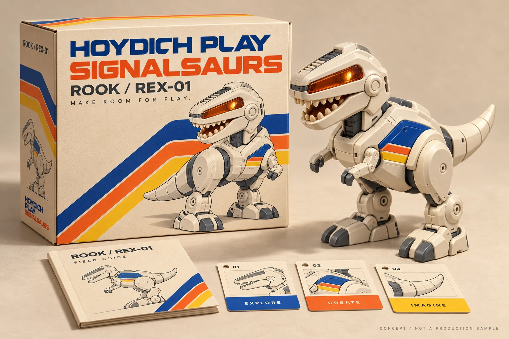
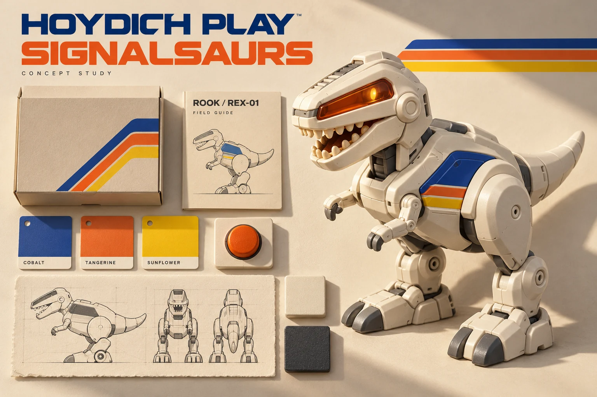
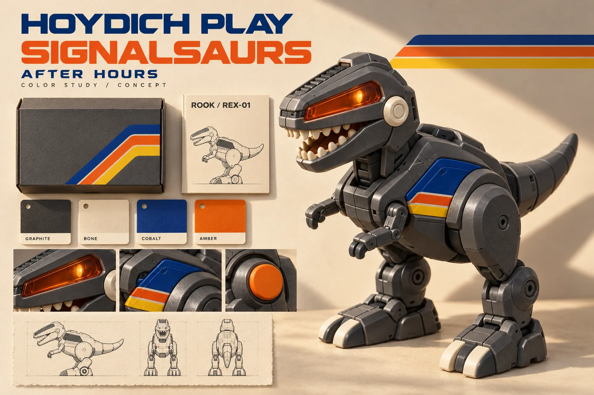
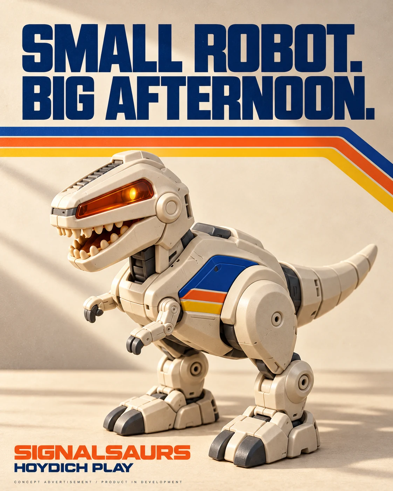
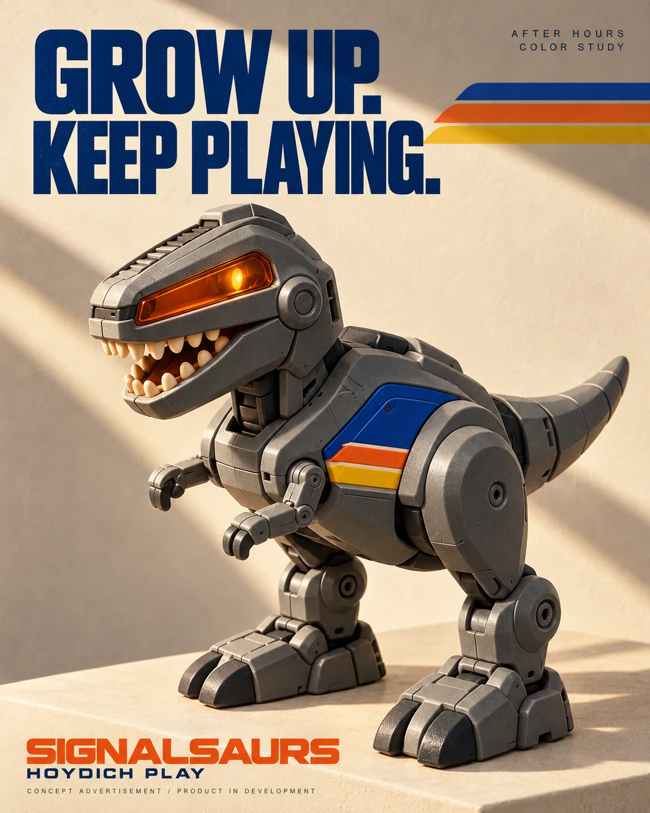

CONCEPT STUDY / HOYDICH PLAY / SIGNALSAURS
One creature.
A company
to build.
Cream plastic. Signal stripes. A dinosaur with a little mechanical personality. What would it take to turn this imagined future into a toy people want to keep?
Open the complete study
01 / THE IDEA
Make room for play.
Hoydich Play is a proposed toy division under Hoydich Enterprises. Its first world is SIGNALSAURS. Its first character is ROOK, product code REX-01: an earnest, slightly overprepared robot dinosaur with a familiar future in its bones.
The references suggest a particular optimism: controls you can understand, a body with presence, color that feels like a signal. The proposed identity turns that atmosphere into original character studies, packaging, mission cards and two campaign directions. The names and designs remain provisional; public concept work does not establish commercial clearance.
The company ambition is broader than a single object, but the first decision is deliberately small. Develop one creature well enough to earn a place in a home. Other bodies, entertainment and licensing belong to later decisions, after actual play, reliable production and viable economics.

02 / TWO REASONS TO CARE
Family afternoons.
Collector shelves.
Small robot. Big afternoon.
For families, the proposed play is physical and shared: pick a mission, arrange a scene, press a control and watch a short expressive response. Children ages 8–12 are the design audience; professional age grading must follow the real product.
Grow up. Keep playing.
For adult collectors, sculpture, finish and graphics matter. The graphite “After Hours” study uses the same proposed platform. A finish changes presentation, not capability or safety classification. Both audiences should lead the testing.

03 / THE WORK BETWEEN
Give the image a real play loop.
The costed first product is stationary, with broad planted feet and two expressive motor axes. It is not a walking biped. Four AA cells, buttons, authored sound and approved motion sequences support an offline core. No onboard microphone or camera is proposed. These are engineering requirements to validate, not built features.
AI has a narrower proposed role: an optional adult mission planner could compose combinations of reviewed actions and narration, previewed by the adult before transfer. The robot would execute bounded, prevalidated commands. There is no implemented AI feature or legal classification yet. The California companion-chatbot restrictions discussed in the research remain an early stop/go issue; an adult app is not an established exemption.
Microduck makes the distinction useful.
Pollen Robotics’ Microduck was offering a $399 introductory preorder in the October 17 research snapshot: a 15-motor biped, aimed at movement and open development. It sets a serious reference for physical AI. It does not prove our simpler toy’s costs, demand or feasibility. Its software and mesh assets also carry different licenses; commercial dinosaur-reskin rights have not been established.
The next proof is a working mechanism and repeatable five-minute mission, followed by independent safety review, family and collector use studies, comparable factory proposals and production validation. A convincing render cannot answer those questions.
04 / PUT NUMBERS BESIDE THE PICTURE
A cost hypothesis,
open to inspection.
These are planning assumptions in the published model, not supplier quotes, validated demand or an offer to buy or invest.
- RETAIL HYPOTHESIS
- $199
- A test baseline; compare $149 / $199 / $249.
- MODELED LANDED COST
- ~$49
- At 5,000 units; tooling and development are separate.
- DTC CONTRIBUTION
- ~$62.56
- Per modeled order, before fixed program costs.
- FULL FUNDING SCENARIO
- ~$1.40m
- Includes reserves and a 10% liquidity buffer.
The first 5,000 units do not recover the full development program in the base case. Duties, yield, returns, acquisition, support and delays can materially change the result. The editable workbook exposes the assumptions.
05 / WHY EL SEGUNDO
A useful place to begin.
El Segundo brings toy-brand experience and space-systems engineering into the same region, with South Bay prototyping, family communities and global freight nearby. That makes a credible place to design and test. It does not establish low-cost local toy manufacturing.
The practical proposal is a small design-and-play operation: keep character direction, independent engineering review, test standards and customer learning close. Compare production suppliers using the same drawings, quantities and quality requirements. Use local business-advising and supplier-scouting routes for specific questions.
Mattel, public institutions, schools and museums appear in the research as context or possible routes to investigate. None is a partner. No venue access, supplier quotation, certification or customer order has been obtained. The next investment is a staged $30,000–$60,000 discovery program within the larger model, with legal, play and engineering gates before expensive tooling.
06 / A WORLD YOU CAN RECOGNIZE
The campaign,
still a concept.
The family and collector studies share one character. Keep the development disclosure visible in every placement; neither image demonstrates functioning hardware.




07 / THE COMPLETE PUBLIC STUDY
Open the books.
Inspect the model.
The complete package is published on PointCast. Research dates to October 17, 2026; publication followed on October 18. It is a record of concept development, not an announcement of production progress.
Identity, mood boards, character, packaging and campaigns.
PDF / 36 PAGESThe research + strategyProduct, manufacturing, local routes, launch and service.
XLSX / 7 SHEETSThe editable modelVolumes, unit economics, cash timing and scenarios.
CSV / 47 SOURCESThe source registerOfficial and research links with access notes.
Creative notes, editable identity and structured source files
- Creative notes, campaign copy and prompts TXT
- Publication note / October 18, 2026 TXT
- Start here / package guide TXT
- Editable brand-guide content JSON
- Hoydich Play wordmark / editable SVG SVG
- Signal stripes / editable SVG SVG
- SIGNALSAURS wordmark / editable SVG SVG
- Editable strategy content JSON


The complete package also includes all five original concept PNGs. Visual provenance is recorded here.